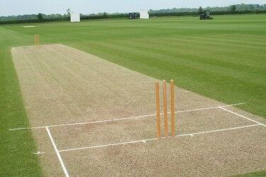

Key Terms
- Ball
- Aside from actually being a cricket ball, when anyone mentions a "ball," it is also in reference to a single delivery.
- Batsman
- Players who are batting at the crease on the pitch (always 2 at a time).
- Bouncer
- A delivery that is intended to be pitched short and generate lethal bounce. The after being bounced on the ground, the ball is intended to as high as the batsman's neck.
- Boundary
- A shot which results in an automatic four or six runs. The ball must touch the boundary rope for either of the following runs to be added to the batting team's scorecard.
- Four Runs: The ball reaches the boundary rope and in the process lands on the ground within the boundary rope.
- Six Runs: The ball goes arial and does not land on the ground within the boundary rope.
- Bowling
- The equivalent of pitching in baseball. However, while playing cricket, you must pitch the ball down onto the pitch, otherwise you run the risk of bowling an illegal delivery and possibly harming your opponent. The player who is bowling is called the bowler.
- Century
- An honour for batsmen. A century is celebrated once the batsman scores 100 runs individually.
- Extras
-
Deliveries that do not satisfy regulation and hence are punished by providing an extra run to the batting team's scorecard.
- No Ball: A delivery in which the bowler crosses the crease completely providing an unfair advantage to the bowler. This is punished by providing a free hit to the batsman.
- Free Hit: A delivery which does not impact the batting side if the batsman gets out.
- Wide Ball: A delivery that is pitched too far away from the batsman.
- Over
- A set of 6 deliveries determining how many total deliveries a team faces in an innings.
- Pitch
- The strip of land designed by ground-keepers which greatly influences the style of play in a cricket match. The pitch is also called "the track." The nature of the pitch can influence the gameplay. A pitch can be "green," "soft," "hard," "bouncy," "flat," etc.

- Runs
- Points. The batsman must run to the other end to add a run to the scorecard, which effectively rotates the player on strike. The batsman can do this multiple times to add multiple runs per ball.
- Wicket
- An "out." A wicket can fall by the batsman's stumps being bowled off, caught, or run out. Each team has 10 wickets in hand to start off their respective innings.
- Yorker
- A lethal delivery intended to hit the pit right infront of the toe of the batsman.